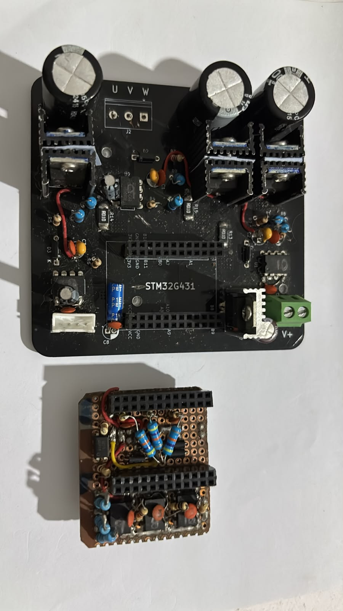

Motor Driver Evolution
Overview
A progression of motor driver boards built to close the loop between power electronics and control firmware. Started with an isolated half-bridge as a safe reference design, moved to a full-bridge prototype, then into four successive FOC driver iterations — each one fixing a specific limitation from the previous version.
01 · Isolated Half-Bridge
A single half-bridge driver with galvanic PWM isolation and bidirectional current sensing. Built as a reference design to validate the isolation and current-sense chain before committing to a full three-phase driver.
- IR2101 gate driver with bootstrap topology
- 2× 6N137 high-speed optocouplers isolating logic from power
- AD8418 bidirectional current sense across a 2 mΩ shunt
- 1000 µF bulk smoothing on the power rail

02 · Full-Bridge Prototype
First attempt at a complete motor drive stage — a full H-bridge test board built to verify gate drive timing, deadtime handling, and current-sense behavior under switching before committing to a three-phase layout.

03 · FOC Driver · v1
First three-phase FOC driver board. Established the basic topology: low-side shunt sensing, optocoupler-isolated gate signals, and a discrete power stage driven from an STM32G431. Exposed the design limits that motivated the next revision — thermal density and gate-loop layout.

04 · FOC Driver · v2 (current)
Current driver revision — the board on display. Cleaned up power routing, improved thermal behavior, and refined the gate-drive layout after v1's lessons. Runs the STM32G431 sensorless FOC kernel at 24 kHz.
- Refined power stage layout — reduced gate loop inductance
- Improved thermal path from MOSFETs to board copper
- Integrated bulk capacitance and snubbers at the power entry
- Same 24 kHz control loop, now with cleaner electrical behavior
05 · FOC Driver · v3 (in progress)
Next revision currently in design. Focused on integrating the sensing front end more tightly with the power stage and reducing overall board size for a more compact final form factor.
STATUS · IN DESIGN
Layout and component selection in progress. Will be added here when fabricated and validated.